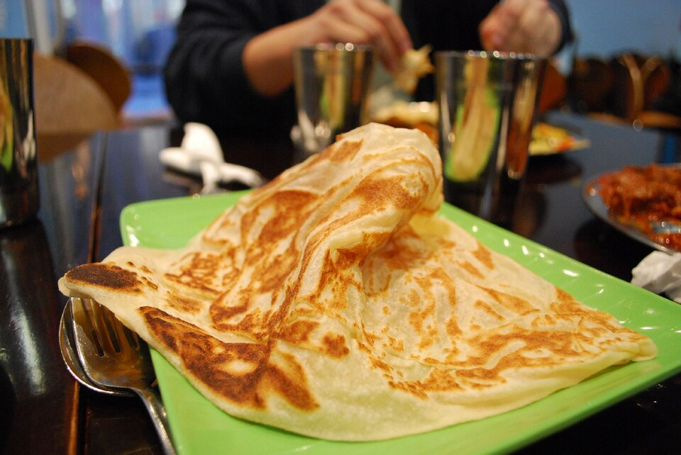

Egg Prata Recipe

avlxyz,
CC BY-SA 2.0,
via Wikimedia Commons
Ingredients:
The Dough
- All-Purpose Flour
- Water
- Condensed Milk
- Salt
- Ghee or Melted Butter
The Filling and Cooking
- Fresh Eggs
- Extra Ghee for frying
Cooking Instructions:
Dough Prep
- Mix the flour, water, condensed MILK, salt, and ghee together in a bowl until a soft dough forms.
- Knead the dough until smooth, divide it into small balls, coat them in ghee, and let them rest covered for 2 hours.
Stretching and Adding Egg
- Oil your workspace and flip, stretch, or roll out a dough ball until it is paper-thin and translucent.
- Crack a fresh Egg onto the center of the stretched dough and spread it out slightly with a spoon.
- Fold the four edges of the dough inward to form a square envelope over the egg filling.
Pan Frying
- Heat a flat griddle or skillet over MEDIUM heat and grease it Generously with ghee.
- Place the folded prata onto the hot griddle and cook for 2 to 3 minutes until the bottom turns golden brown.
- Flip the prata over and cook the other side for another 2 minutes until crispy and completely cooked through.
- Remove from heat, clap the edges with your hands to fluff it up, and serve immediately.
Back to HOME
Links to other recipes:
Note:
This recipe may or may not end up tasting like dog shit, as I just asked
ChatGPT to generate a recipe for me.